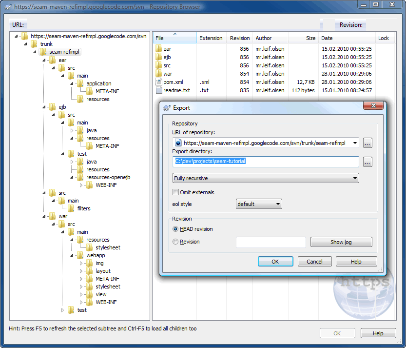

Getting Started Tutorial
The Seam Maven Refimpl project is a Maven multi-module multi-environment project template for Seam using EJB and JSF that is archived in an ear-archive. A super-POM, (which inherits from the Seam root POM) contains library dependencies and plugin management. The parent project manages the EAR, EJB and WAR modules while the Codecaus Properties Maven Plugin is used to manage a multi-environment setup.
Due to problems booting the JBoss Micro Container with Maven, we have choosen to use the Apache OpenEJB embedded container to run Seam (and EJB-3.x) integration tests. The seam-refimpl project template comes preconfigured with the Apache OpenEJB embedded container for running tests. The main inspiration for using Apace OpenEJB is the post, Using OpenEJB for integration testing, on SeamFramework.org. A lot of code is copied from this post, so a zillion thanks to Stephan B and Oliver Thierry :-)
This tutorial outlines the necessary steps to get a Mavenized Seam project up and running on a JBoss Application Server (JBoss-4.2.3.AS or Jboss-5.1.x.AS) and how to effectively test your Seam components using the Apache OpenEJB embedded container.
You should have a basic understanding of JBoss Seam (EJB3, JPA, JSF, EL, SeamTest), TestNG, the JBoss application server, Maven and a DBMS of your choice, e.g. MySql5, to follow this tutorial.
Shortcuts
The shortcuts are listed here so we don't have to type the tedious file paths over and over again in this document.
${JBOSS_HOME}- refers to Jboss installation directory, e.g.C:\servers\jboss-4.2.3.GA -
${JBOSS_CONFIG}- refers to the configuration directory e.g.C:\servers\jboss-4.2.3.GA\default -
${JBOSS_DEPLOY}- refers to the JBoss deploy directory, e.g.C:\servers\jboss-4.2.3.GA\default\deploy -
${TRUNK}- the project root directory, i.e. seam-maven-refimpl -
${SEAM_REFIMPL}- the directory where the reference project, i.e. seam-refimpl, is installed on your computer -
${SEAM_TUTORIAL}- the directory where the tutorial project, i.e. seam-tutorial, is installed on your computer
Download and Install Software
-
jdk-6.
Note: OpenEJB-3.1.2 and jdk-1.6.0 update18 or later has a known bug: JDK 1.6.0 u18 has a ClassCastException in ClassLoaderUtil.clearSunJarFileFactoryCache . But according to this answer, G2.2 Unable to clear Sun JarFileFactory cache , you should not see any functional problems connected to this bug. -
Maven 2.2.1 or later 2.x.
Note: You can not use Maven 3! The project externalizes some properties that is used to generate the correctjboss-app.xmldependent on the targeted JBoss Application Server. This works fine with Maven 2.2.1, but fails in Maven 3. The latest Maven3.0-beta1 does not evaluate external properties during the"ear:generate-application-xml"goal and you will get the following error message:
[ERROR] Failed to execute goal org.apache.maven.plugins:maven-ear-plugin:2.4.2:generate-application-xml (default-generate-application-xml) on project mvn3-problem-ear: Failed to initialize JBoss configuration: Invalid JBoss configuration, version[${as.version}] is not supported. -> [Help 1]The bug is reported in JIRA: http://jira.codehaus.org/browse/MNG-2971. -
Tortoise SVN or a SVN client of your choice.
Note: The svn client must be compatible with SubClipse-1.6.x if you are using the Eclipse IDE. -
Jboss 4.2.3.GA Application Server or later.
Note: Download a build that corresponds with your installed jdk,jboss-4.2.3.GA.jdk6.zipis the correct build for jdk-6.
Install the required software.
Check Out and Build Trunk
In the tutorial we'll use Tortoise SVN to check out the project.
-
Create a project directory, e.g.
C:/dev/projects/seam-maven-refimpl -
In file explorer right click on the project directory and select
TortoiseSVN > Repo-browserfrom the menu.
-
Check out the latest project source code from trunk.
-
Project members authenticate over HTTPS to allow committing changes:
https://seam-maven-refimpl.googlecode.com/svn/trunk/
When prompted, enter your generated googlecode.com password. -
Non-members may check out a read-only working copy anonymously over HTTP:
http://seam-maven-refimpl.googlecode.com/svn/trunk/
-
In reposytory broser right click
trunkand selectcheckout...from the menu. - The checkout directory should point to the directory where you want to checkout the trunk.
- Click the OK button to checkout.
(Command-line access to svn is described here: http://code.google.com/p/seam-maven-refimpl/source/checkout) -
Project members authenticate over HTTPS to allow committing changes:
-
Open a command shell and navigate to your checkout directory.
Run:
mvn clean install-
Builds the
no.knowit.seam:rootpom which all projects in this trunk uses as its root pom. -
Builds the
no.knowit.seam:seam-utilsmodules.
-
Builds the
Build the Seam Maven Refimpl Project
-
Navigate to
${SEAM_REFIMPL}and run:mvn clean installto build the seam-refimpl project. -
Copy the
${SEAM_REFIMPL}/ear/target/seam-refimpl-ear.earfile to the${JBOSS_DEPLOY}directory. - Start JBossAS
JBoss AS runs on port 8080, so first ensure this port isn't already in use (be aware that Apache Tomcat also runs on port 8080 by default). In your command shell, navigate to${JBOSS_HOME}/bin. If you're using a Unix platform, execute the command:
./run.sh
On Windows, execute the command:
run - Open a browser and point the URL to
http://localhost:8080/seam-refimpl/.
 Click on the
Click on the Movie Listmenu.Click theCreate moviebutton to create a new movie.Login and proceed to the registration form.Register and clickSave.ClickDoneto return to the Movie List view. -
Shutdown JBossAS.
Navigate to${JBOSS_HOME}/binusing a command shell and type:shutdown -Sor press Ctrl+C from the command shell that started the server. -
Delete the
seam-refimpl-ear.earfile from the${JBOSS_DEPLOY}directory.
Use the seam-refimpl Project as a Template for Your Own Project
This section explains how to use the seam-refimpl project as a template for your own project.
-
Export From SVN
-
In file manager right click the
${TRUNK}/seam-refimpldirectory and select TortoiseSVN > Repo-browser from the menu. -
In repo browser right click the
seam-refimpldirectory and selectexport...from the popup menu. - From the
Exportdialog window selectExport directoryand clickOK
-
In file manager right click the
- Modify POMs
Modify the poms by changing text emphasized in blue:-
The parent pom:
<project xmlns="http://maven.apache.org/POM/4.0.0" xmlns:xsi="http://www.w3.org/2001/XMLSchema-instance" xsi:schemaLocation="http://maven.apache.org/POM/4.0.0 http://maven.apache.org/maven-v4_0_0.xsd"> <modelVersion>4.0.0</modelVersion> <parent> <groupId>no.knowit.seam</groupId> <artifactId>root</artifactId> <version>2.2.0-SNAPSHOT</version> </parent> <groupId>com.yourcompany.seam</groupId> <artifactId>seam-tutorial</artifactId> <version>0.1-SNAPSHOT</version> <name>${project.artifactId} : ${project.version}</name> <description>The Seam Tutorial parent POM</description> <!-- <url>http://code.google.com/p/seam-maven-refimpl/</url> --> <packaging>pom</packaging> <modules> <module>ejb</module> <module>war</module> <module>ear</module> </modules> <properties> <env>dev</env> <!-- The default setting if no profile is specified --> <app>tutorial</app> <app.context>seam-tutorial</app.context> <!-- hint: same value as artifactId --> <app.web.context>${app.context}</app.web.context> <app.display.name>Seam Tutorial</app.display.name> <app.description>The Seam Tutorial uses seam-refimpl as a project template</app.description> <app.distributable>false</app.distributable> <app.jndi.pattern>${app.context}-ear/#{ejbName}/local</app.jndi.pattern> <!-- JBoss JNDI Pattern --> <app.jndi.pattern.test>/#{ejbName}/Local</app.jndi.pattern.test> <!-- OpenEJB JNDI Pattern --> <!-- Properties for production are located in src/main/filters/filter-prod.properties Properties to be modified by developer are located in src/main/filters/filter-dev.properties Copy filter-prod.properties to filter-dev.properties and add filter-dev.properties to svn:ignore Type e.g "mvn -Penv-dev" to activate the development profile. --> </properties> . <!-- <scm> <connection>scm:svn:http://seam-maven-refimpl.googlecode.com/svn/trunk</connection> <developerConnection>scm:svn:https://seam-maven-refimpl.googlecode.com/svn/trunk</developerConnection> <url>http://code.google.com/p/seam-maven-refimpl/source/browse/#svn/trunk</url> </scm> --> . </project> -
The EAR pom:
<project . <parent> <groupId>com.yourcompany.seam</groupId> <artifactId>seam-tutorial</artifactId> <version>0.1-SNAPSHOT</version> <relativePath>../pom.xml</relativePath> </parent> <artifactId>seam-tutorial-ear</artifactId> <name>${project.artifactId} : ${project.version}</name> <description>The Seam Tutorial EAR module</description> <packaging>ear</packaging> . </project> -
The EJB pom:
<project . <parent> <groupId>com.yourcompany.seam</groupId> <artifactId>seam-tutorial</artifactId> <version>0.1-SNAPSHOT</version> <relativePath>../pom.xml</relativePath> </parent> <artifactId>seam-tutorial-ejb</artifactId> <name>${project.artifactId} : ${project.version}</name> <description>The Seam Tutorial EJB module</description> <packaging>ejb</packaging> . </project> -
The WAR pom:
<project . <parent> <groupId>com.yourcompany.seam</groupId> <artifactId>seam-tutorial</artifactId> <version>0.1-SNAPSHOT</version> <relativePath>../pom.xml</relativePath> </parent> <artifactId>seam-tutorial-war</artifactId> <name>${project.artifactId} : ${project.version}</name> <description>The Seam Tutorial WAR module</description> <packaging>war</packaging> . </project>
-
The parent pom:
-
Rename the datasource file
${SEAM_TUTORIAL}/ear/src/main/resources/seam-refimpl-ds.xmltoseam-tutorial-ds.xml(by default the datasource file name starts with the${app.context}property value). -
Run
mvn clean installto verify that the project builds.
Activate Development Mode
A software development lifecycle consists of several phases that each requires its own project configurations - which can make moving a project through all the different phases a challenge. For instance, your development phase may require you to connect to a local database, but your integration test environment database won't be local. And your test database will certainly differ from your production database. Also, being able to deploy to multiple environments is a standard requirement for business applications. It is also natural that each developer want to install the project and it's required utilities, like the application server, to directories of hers/his personal taste. To achieve this we will use a combination of property files and profiles.
To activate development mode:
- Copy
filter-prod.propertiestofilter-dev.properties:
The filter properties file has a variable portion${env}, which in our case will come from the activated profile or from the default${env}setting in the parent POM if neither thedevnor theprodprofile is activated.
The${env}property value isdevwhen we activate the development profile - so we'll name the property filefilter-dev.properties.
Copy${SEAM_TUTORIAL}/src/main/filters/filter-prod.propertiesto${SEAM_TUTORIAL}/src/main/filters/filter-dev.properties(add thefilter-dev.propertiesfile to svn:ignore if your project is under version control). - Modify
filter-dev.properties:
To get some support for incremental hot deployment at development time, we want to deploy our application as an exploded archive. The project template has an explode profile which is used to copy the exploded EAR to the application server and to hot deploy code in EJB and WAR modules during the Maven compile phase. Open thefilter-dev.propertiesfile in your favourite editor and make the following changes:- Set the property
jdk.debugto true. - Set the property
jdk.optimizeto false. - Set the property
app.debugto true. - Set the property
app.unpack.modulesto true. - Point the
as.homeproperty to the directory where you installed JBoss AS.
jdk.debug =true jdk.optimize =false app.debug =true app.unpack.modules=true as.home =C:/dev/server/jboss-4.2.3.GA-jdk6
- Set the property
-
Remove the
activeByDefaulttag from theenv-prodprofile:
Theenv-prodprofile is activated by default, unless another profile in the same pom is activated, when you execute a Maven command. To activate theenv-devprofile you could typemvn install -Penv-dev- but the most convenient is to remove theactiveByDefaulttag from theenv-prodprofile.
Open each POM in the project and remove theactiveByDefaulttag from theenv-prodprofile:<profile> <id>env-dev</id> <properties> <env>dev</env> </properties> </profile> <profile> <id>env-prod</id>With this profile configuration the<activation><activeByDefault>true</activeByDefault></activation><properties> <env>prod</env> </properties> </profile>envproperty value is set in the parent POM and will be used in cases where theenv-devorenv-prodprofile is not specified - which is more convenient since most of your build cycles are connected to coding, compiling, unit tests and deployment to your local app server. -
Install and deploy the exploded EAR to the application server.
-
Run:
mvn clean install -Pexplode - It is important to clean the target when you switch from prod to dev profile and vice versa.
Your${JBOSS_DEPLOY}directory should now contain the exploded EAR project:
-
Run:
- Start JBoss AS in debug mode, open a browser and point the URL to http://localhost:8080/seam-tutorial/.
-
Make some changes to the code (the structure of a Seam project is well
documented so we will not go into details
here). Compile code with the explode profile,
mvn compile -Pexplode, and verify that incremental hot deployment of WARs and EARs works. Check Chapter 2.1 and chapter 2.8 in the Seam reference documentation and the application server documentation for hot deployment issues. -
Remove or refactor example code, eg:
-
Delete package
no.knowit.seam.example.actionfromejb/src/test/java/nodirectory. -
Delete package
no.knowit.seam.example.actionandno.knowit.seam.example.modelfromejb/src/main/java/nodirectory. -
Refactor
no.knowit.seam.example.security.Authenticator,no.knowit.seam.example.security.AuthenticatorBeanandno.knowit.seam.example.action.AuthenticatorTest. -
Remove or modify SQL code in
ejb/src/main/resources/import.sql. -
Delete or modify
ejb/testng.xml. -
Modify Shurefire plugin in
ejb/pom.xmlaccordingly, e.g:<plugin> <groupId>org.apache.maven.plugins</groupId> <artifactId>maven-surefire-plugin</artifactId><configuration><suiteXmlFiles><suiteXmlFile>testng.xml</suiteXmlFile></suiteXmlFiles></configuration></plugin> -
Delete
war/src/main/webapp/view/exampledirectory. -
From
war/src/main/webapp/layout/menu.xhtmlremove:<!-- @newMenuItem@ --> <s:link view="/view/example/MovieList.xhtml" value="Movie List" includePageParams="false" propagation="none"/> -
Add your own application title in
war/src/main/webapp/layout/template.xhtml, eg:<title>Seam Torial</title> - Apply your own entities and actions etc.
-
Delete package
Filters
Filters are Maven's way of externalizing property replacement into easily portable and configurable properties files. The basic idea of filtering is that you set up a named properties file and specify one or more filesets to apply the substitutions in the properties file. For example:
<filters>
<filter>src/main/filters/filter-${env}.properties</filter>
</filters>
The "Problem" with Filters
Maven filter properties are ony visible to resources and can not be accessed from the POM. This is where the Properties Maven Plugin makes our life a little easier when dealing with properties that we need to access inside our POM. It provides goals to read and write properties from and to files, and also to set system properties. It's main use-case is loading properties from files instead of declaring them in pom.xml, something that comes in handy when dealing with different environments. The plugin read properties during the "initialize" phase and the properties are then accessible from the pom. The Properties Maven Plugin is not inheritable from the parent POM and and you must therefore configure it in each sub POM. For example:
<plugin>
<groupId>org.codehaus.mojo</groupId>
<artifactId>properties-maven-plugin</artifactId>
<executions>
<execution>
<configuration>
<files>
<file>../src/main/filters/filter-${env}.properties</file>
</files>
</configuration>
</execution>
</executions>
</plugin>
The filter properties file has a variable portion ${env}, which in
our case will come from the activated profile or from the default setting for ${env} in the parent
POM if no profile is specified. When resources are filtered, the project replaces
all matching property names with their corresponding values, taking the filter list into account.
The resources to be filtered are defined by the "resources" build element. For example:
<resources>
<resource>
<directory>src/main/resources</directory>
<filtering>true</filtering>
</resource>
</resources>
Filtering Example
The filtering take place during the process-resources phase and the filtered resource is then copied to the target directory.
-
Given that our property file has the following properties:
ds.jndi.name =refimplDatabase ds.database.name =refimpl_db ds.server.name = ds.driver.class =org.hsqldb.jdbcDriver ds.connection.url=jdbc:hsqldb:mem:${ds.database.name} ds.user.name =sa ds.password = -
When the corresponding placeholders in our datasource file,
ear/src/main/resources/seam-tutorial-ds.xml, are:<datasources> <local-tx-datasource> <jndi-name>${ds.jndi.name}</jndi-name> <use-java-context>true</use-java-context> <connection-url>${ds.connection.url}</connection-url> <driver-class>${ds.driver.class}</driver-class> <user-name>${ds.user.name}</user-name> <password>${ds.password}</password> </local-tx-datasource> </datasources> -
Then, during the process-resources phase, the placeholders are replaced with the property values and
we'll get the following result in
ear/target/seam-tutorial-ear-0.1-SNAPSHOT/seam-refimpl-ds.xml:<datasources> <local-tx-datasource> <jndi-name>refimplDatabase</jndi-name> <use-java-context>true</use-java-context> <connection-url>jdbc:hsqldb:mem:refimpl_db</connection-url> <driver-class>org.hsqldb.jdbcDriver</driver-class> <user-name>sa</user-name> <password></password> </local-tx-datasource> </datasources>
Filters Properties Reference
The filters properties file with reference to the resource files keeping the corresponding placeholders:
The resource files, e.g. persistence.xml, are well documented, so we will not go
into details about the properties usage here.
Alternative ways to organize properties can be found here: Maven: Introduction to Build Profiles , Sonatype: Chapter 9. Properties and Resource Filtering
Testing
The area of development that has routinely slowed down Java EE (and Seam) developers most often is testing. Before the embedded EJB container era you had to write teststs, redeploy your application, restart the application server and then run your tests inside the application server. It's just slow and boring to do it that way and as a result projects tend to end up with no automated (integration)tests at all. Now, with the advent of embedded EJB3 containers - which boots super fast, need a minimum of configuration and integrates nicely with Maven - there are noe excuses for not writing tests. Writing tests are simply fun again.
Due to problems booting the JBoss Micro Container with Maven, we have choosen to use the Apache OpenEJB embedded container to test Seam (and EJB-3.x) components. The seam-refimpl project template comes preconfigured with the Apache OpenEJB embedded container for running tests. The main inspiration for using Apace OpenEJB is the post, Using OpenEJB for integration testing, on SeamFramework.org. A lot of code is copied from this post, so a zillion thanks to Stephan B and Oliver Thierry :-)
The classic difference between integration and unit testing is that unit tests run in isolation, or near-isolation. Integration tests, on the other hand, test the whole stack. With an embedded container at hand, another and maybe better way is to group tests by how fast they execute; unit test runs fast and integration tests tend to run slowly. Unit tests are normally executed inside our favourite IDE and running as many tests as possible from IDE should definitively increase our productivity.
As programmers we want to have good code quality, which means good unit test test coverage.
EJB 3 and Seam components are just annotated classes - so it is straight forward to unit-test them
the "traditional" way. However, you will have to "emulate" the Dependency Injection, boot the
EntityManager and manage transactions by yourself , someting that will cost you few additional
lines of boilerplate code. With Apache OpenEJB, which
boots the entire container in less than one second, we can move a lot of our traditional
integration tests to unit tests and avoid the useless boilerplate code. The
documentation and the
examples of OpenEJB are really neat and
enable an easy jump-start. All the Apache OpenEJB examples are automated tests that run with a
simple mvn clean install.
Bootstrapping the OpenEJB Embedded Container
OpenEJB provide an own JNDI-SPI implementation, and plugs so naturally as JNDI-provider.
The settings are factored out into the
ejb/src/test/resources-openejb/jndi.properties file. You will get from the lookup a
fully-featured EJB 3/3.1 container with injected dependencies and persistence.
The filter properties file has a section with properties dedicated to bootstrapping the OpenEJB embedded container:
# Properties for running tests
ds.test =h2
ds.database.name.test =refimpl_db
ds.server.name.test =
ds.driver.class.test =org.h2.Driver
ds.connection.url.test =jdbc:h2:mem:${ds.database.name.test}
ds.user.name.test =sa
ds.password.test =
ds.hibernate.dialect.test =org.hibernate.dialect.H2Dialect
pu.hibernate.dialect.test =${ds.hibernate.dialect.test}
pu.hibernate.hbm2ddl.auto.test =create-drop
pu.hibernate.default_batch_fetch_size.test =16
pu.hibernate.show_sql.test =true
pu.hibernate.transaction.manager_lookup_class.test=org.apache.openejb.hibernate.TransactionManagerLookup
The jndi.properties file has the corresponding placeholders:
You can find more information about OpenEJB embedded configuration here: OpenEJB: Embedded Configuration
Additional Resource Files Needed to Run Seam Tests
In addition to the jndi.properties file OpenEJB need it's own version of
components.xml and web.xml. These files are placed in the
ejb/src/test/resources-openejb directory. If you need to share the OpenEJB spesific
resource files between different modules, just move the ejb/src/test/resources-openejb
directory to the parent project and modify POMs accordingly, e.g:
<testResources>
<testResource>
<directory>src/test/resources</directory>
<filtering>true</filtering>
</testResource>
<testResource>
<directory>../src/test/resources-openejb</directory>
<filtering>true</filtering>
</testResource>
</testResources>
Test Examples
I you haven't done so yet, read trough Chapter 37. Testing Seam applications in the Seam reference manual.
HelloEjbTest
If you only have EJB components to test you could inherit your test class from
no.knowit.openejb.mock.OpenEjbTest which provides Base OpenEJB test functionality for
TestNG tests. If you don't want to use TestNG then follow e.g.
these tutorials:
How To Unit-Test EJB 3 ...in 0.8 Seconds [source code included] and
Effective Unit Testing EJB 3.0 with OpenEJB.
HelloSeamTest
Seam tests should inherit from no.knowit.seam.openejb.mock.SeamOpenEjbTest
which provides base Seam test functionality for TestNG tests running in the OpenEJB embedded
container. The class is a copy of the org.jboss.seam.mock.SeamTest - the only
difference is of cource that the no.knowit.seam.openejb.mock.SeamOpenEjbTest class
set up the fixture needed to boot the OpenEJB embedded container.
Testing Seam Application User Interactions
The SeamOpenEjbTest (equivalent to SeamTest) class lets you write
scripted tests, in a simulated JSF environment. The role of a scripted test is to reproduce the
interaction between the view and the Seam components. In other words, you get to pretend you are
the JSF implementation! This approach tests everything except the view.
You'll find plenty of tests for the Seam example applications which demonstrate more complex cases.
Configure TestNG
To configure TestNG refer to e.g.:
Remove the Project From the Application Server
To finish the basic steps of this tutorial we will clean the project and completly removed it from the application server.
Use the unexplode Profile
The unexplode profile only works if you have activated the dev
profile.
- Shutdown JBossAS:
Navigate to${JBOSS_HOME}/binusing a command shell and type:shutdown -Sor press Ctrl+C from the command shell that started the server. -
Open a command shell, navigate to your project directory and run:
mvn clean -Penv-dev,unexplode
Remove the Project Manually
- Shutdown JBossAS:
Navigate to${JBOSS_HOME}/binusing a command shell and type:shutdown -Sor press Ctrl+C from the command shell that started the server. -
In the projects command shell run:
mvn clean -
Delete the
seam-tutorial-ear.eardirectory (or file), from${JBOSS_DEPLOY}. Also delete the corresponding datasource file,seam-tutorial-ds.xml, form${JBOSS_DEPLOY}if you have deployed the datasource file as a separate service.
This completes the getting started tutorial.
How To's
How to Configure Database Connection
At some point in time you will want to access data in a database other than the default Hypersonic
database provided with the JBoss Application Server and you will require some mechanism to do this.
The *-ds.xml file located in ear/src/main/resources defines a data source,
which is used to access data in a database. These steps explains how to use MySql5 as your data
source.
- Download and install necessary software:
- Copy mysql-connector-java-*-bin.jar to
${JBOSS_CONFIG}/lib(delete any other mysql-connector-java-*-bin.jar file if exist). -
Start the database server and create schema, e.g.
"tutorial_db"using the MySql Administrator GUI.
Or, if you are a MySql macho, open a MySql console and type the following SQL DDL by hand:
CREATE DATABASE tutorial_db CHARACTER SET utf8 COLLATE utf8_general_ci;
Use UTF8 for i18n! -
Edit the filter properties file,
filter-prod.propertiesorfilter-dev.properties, e.g.:# MySQL5 #ds =mysql #ds.jndi.name =tutorialDatabase #ds.database.name =tutorial_db #ds.server.name =localhost:3306 #ds.driver.class =com.mysql.jdbc.Driver #ds.connection.url =jdbc:mysql://${ds.server.name}/${ds.database.name}?characterEncoding=UTF-8 #ds.user.name =root #ds.password = #ds.hibernate.dialect=org.hibernate.dialect.MySQL5InnoDBDialect #ds.xml =${app.context}-ds.xml -
Run:
mvn clean install -Pexplode
The new properties will be filtered into the*-ds.xmlfile during packaging of the project.
How to Deploy the *-ds.xml Datasource File as a Separate Service
You can deploy the *-ds.xml data source file in two ways: embedded
in the ear project or as a separate service deployed to the
${JBOSS_DEPLOY} directory. The default for this build is to embed the
*-ds.xml data source in the ear project.
If you want to deploy the *-ds.xml data source as a separate service then open the
ear pom and make the changes emphasized in blue.
-
Locate the explode profile:
<profiles> <profile> .. <id>explode</id> .. <build> <plugins> <plugin> <artifactId>maven-antrun-plugin</artifactId> <executions> <execution> <id>package</id> <phase>package</phase> <configuration> <tasks> <property name="deploy-path" value="${as.deploy}/${app.context}-ear.ear" /> <echo>Exploding to ${deploy-path}</echo> <delete file="${deploy-path}" quiet="true" /> <mkdir dir="${deploy-path}" /> <sync todir="${deploy-path}" verbose="true" > <fileset dir="${project.build.directory}/${project.build.finalName}" /> </sync> <!-- Uncomment if you want to deploy the *-ds.xml file to appserver deploy directory --> <copy todir="${as.deploy}" file="${project.build.directory}/${app.ds.xml}" verbose="true" /> </tasks> </configuration> .. </profile> .. .. </profiles> -
Locate the Maven resources plugin with execution id
copy-app-ds-xml:<plugins> <plugin> <groupId>org.apache.maven.plugins</groupId> <artifactId>maven-resources-plugin</artifactId> <executions> <execution> <id>copy-app-ds-xml</id> .. <configuration> <!-- Comment out this tag if you have deployed the *-ds.xml file to appserver deploy directory <outputDirectory>${project.build.directory}/${project.build.finalName}</outputDirectory> --> <!-- Uncomment this tag if you have deployed the *-ds.xml file to appserver deploy directory --> <outputDirectory>${project.build.directory}</outputDirectory> <resources> <resource> <directory>src/main/resources</directory> <filtering>true</filtering> <includes> <include>${app.ds.xml}</include> </includes> </resource> </resources> </configuration> </execution> </executions> </plugin> .. -
Locate the Maven EAR plugin:
.. <!-- Maven EAR plugin --> <plugin> <groupId>org.apache.maven.plugins</groupId> <artifactId>maven-ear-plugin</artifactId> <configuration> .. <jboss> <!-- To trigger the generation of the jboss-app.xml file you need to ... --> <version>${as.version}</version> <loader-repository> <!-- seam.jboss.org is a Seam-specific scoped classloader. It acts as ... --> seam.jboss.org:loader=${app.context}-ear </loader-repository> <!-- Comment out this tag if you have deployed the *-ds.xml file to appserver deploy directory <data-sources> <data-source>${app.ds.xml}</data-source> </data-sources> --> </jboss> .. </configuration> </plugin> ..
How to Enable Logging in JBoss AS
For those who had a hard time configuring "their own" log4j.properties or log4j.xml within their application on JBoss, see: My Wiki: How do i use my own log4j properties or xml file in JBoss and JBoss Community: How do i use my own log4j properties or xml file in JBoss.
Tips for Debugging
When your application starts up it will print all components being created (Seam and your own) and the context they are placed in. Validate that your new component is displayed as well.
Seam has a debug page showing useful information. To use it, add the following dependency to your war
pom.xml:
<dependency>
<groupId>org.jboss.seam</groupId>
<artifactId>jboss-seam-debug</artifactId>
<version>${jboss.seam.version}</version>
</dependency>
In filter-dev.properties make shure that the jdk.debug and
jdk.debug property values are true:
jdk.debug =true
jdk.optimize =false
jdk.source =1.6
jdk.target =1.6
app.debug =${jdk.debug}
app.unpack.modules=true
Open your browser and point to the following URL to see the debug page. http://localhost:8080/seam-tutorial/debug.seam
Files To Add To Svn Ignore
Some files and directories, like user spesific settings, generated files and IDE settings should not be under revision control. This are the files found so far using Eclipse with the m2eclipse and JBoss Tools plugin. There will be more IDE spesific files to add as other IDEs are put to use. IDE spesific files should be added to the global svn ignore!
-
In project root directory
- appClientModule/
- .classpath
- .externalToolBuilders/
- *.launch
- .metadata/
- profiles.xml
- .project
- .settings/
- src/main/filters/filter-dev.properties
- target/
-
In ear directory
- src/main/application/META-INF/application.xml (see: MNGECLIPSE-1541 and MNGECLIPSE-2145)
- .externalToolBuilders/
- .settings/
- target/
- .classpath
- .project
- *.launch
-
In ejb directory
- .checkstyle
- .externalToolBuilders/
- .settings/
- target/
- .classpath
- .project
- hibernate-console.properties
- *.launch
-
In war directory
- .checkstyle
- .externalToolBuilders/
- .settings/
- target/
- .classpath
- .project
- *.launch
- src/main/webapp/WEB-INF/.pages.xml.spdia
- src/main/webapp/WEB-INF/.faces-config.xml.jsfdia
Useful Links
- Maven: The Complete Reference
- Better Builds with Maven
- Maven2, Step by Step
- Codehaus: Maven Mini Guides
- JavaWorld: An introduction to Maven 2
- JavaWorld: Get the most out of Maven 2 site generation
- JavaWorld: Automated code reviews with Checkstyle. Part 1 , Part 2
- Maven Recipes
- Versioning - Best Practices
- A Maven2 multi-environment filter setup
- Maven project filtering
- Using Maven profiles and resource filtering
- Integration Testing in your Maven Application
- Codehaus: Maven and Integration Testing
- Maven Test FAQ
- Wakaleo Consulting: Unit tests are not integration tests
- Wakaleo Consulting: Automated deployment with Cargo and Maven - a short primer
- SeamTest Coverage with Cobertura
- Testing EJB3 apps with TestNG
- Configuring a Seam EJB project for development with Maven and JBoss Tools
- Using OpenEJB for integration testing
- Effective Unit Testing EJB 3.0 with OpenEJB
- Restarting the embedded OpenEJB container between each test
- How To Unit-Test EJB 3 ...in 0.8 Seconds [source code included]
- OpenEJB: Home
- OpenEJB: Examples
- OpenEJB: FAQ
- OpenEJB: Injection of EntityManager Example
- OpenEJB: Embedded Configuration
- OpenEJB: Unit Testing Transactions
- OpenEJB: Configuring Logging in Tests
- OpenEJB: Configuring PersistenceUnits in Tests
- OpenEJB: JNDI Names
- OpenEJB: Hibernate
- OpenEJB: Embedded Configuration
- OpenEJB: Local Client Injection
- OpenEJB: Functional testing with OpenEJB, Jetty and Selenium
- Highlight
- Fullsize